높은 성능을 시연하는 로봇과, 하루 종일 믿고 맡길 수 있는 로봇 사이에는 큰 간극이 있다. 이 발표는 그 간극을 더 많은 사람의 수작업이 아니라, 로봇이 경험을 수집하고 스스로 반복하는 후속 학습 루프로 메우려는 시도다.
초록
발표는 두 개의 상보적인 연구를 다룬다. 첫 번째인 π*0.6는 정책 롤아웃과 사람의 교정, 성공까지의 진행도를 예측하는 가치함수, advantage 조건부 지도학습을 결합해 장시간 워크플로의 신뢰성과 처리량을 높인다. 두 번째인 EXPO와 EXPO-FT는 표현력이 높은 diffusion 기반 VLA를 직접 강화학습으로 불안정하게 갱신하는 대신 작은 가우시안 edit policy를 추가하고, 최신 Q 함수에 따른 후보 선택으로 안정적인 온라인 미세조정을 수행한다. 결과는 인상적이지만 사람의 개입, 환경 리셋, 계산 비용, 분포 밖 탐색이라는 실용적 제약이 남아 있다.
먼저 읽는 핵심 발견
신뢰성은 성공률만으로 설명되지 않는다
느리게 성공하거나 실패 뒤 오래 머무는 정책을 구분하려면 단위 시간당 성공 횟수인 throughput이 필요하다.
진행도가 범용 가치 신호가 된다
성공까지 남은 시간을 예측하면 과제별 정교한 보상 없이도 전진, 정체, 후퇴를 학습할 수 있다.
복잡한 정책은 안정적으로 유지한다
diffusion VLA는 지도학습으로 보존하고, 작은 edit policy가 가치 최대화 역할을 맡는 분업이 효과적이었다.
사람의 개입이 데이터 생산 장치가 된다
실패를 피하기 위한 원격조작이 일회성 안전조치에 그치지 않고 회복 행동을 가르치는 온라인 데이터로 축적된다.
첫 시연과 13시간 운전 사이
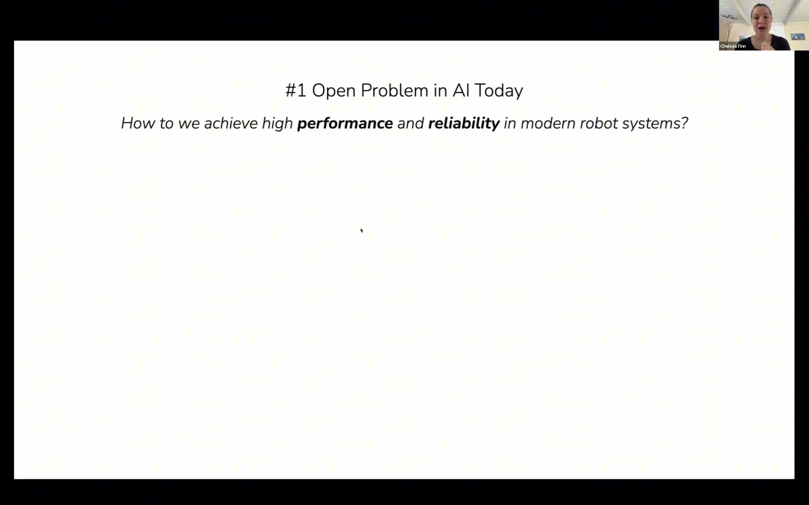
Finn이 제시한 첫 번째 미해결 문제는 단순하다. 현대 로봇 시스템에서 높은 성능과 높은 신뢰성을 어떻게 동시에 달성할 것인가. 신뢰성은 로봇이 장시간 자율적으로 움직이기 위한 전제이며, 사람이 자연스럽게 수행하는 반복 작업과 오늘날 로봇 사이의 핵심 차이다.
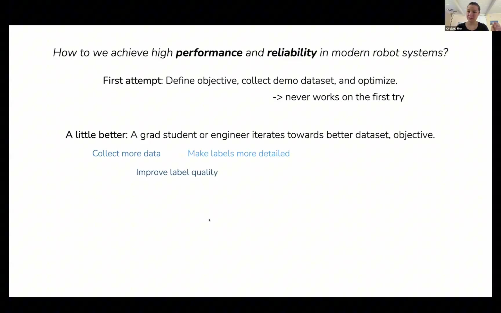
기존 접근은 목표를 정하고 데모 데이터셋을 수집한 뒤 정책을 최적화한다. 하지만 실제 시스템은 첫 시도에 충분히 안정적이지 않다. 엔지니어는 데이터를 추가하고, 라벨을 세분화하고, 실패 사례를 모으며 다시 학습시킨다. 이 루프에서 가장 먼저 한계에 도달하는 자원은 GPU가 아니라 사람의 시간과 집중력이다.
“정책을 한 번 학습시키는 것보다, 실패에서 회복하며 계속 나아지게 만드는 것이 더 어렵다.” 발표의 문제의식을 요약한 편집자 해석
왜 하필 에스프레소인가
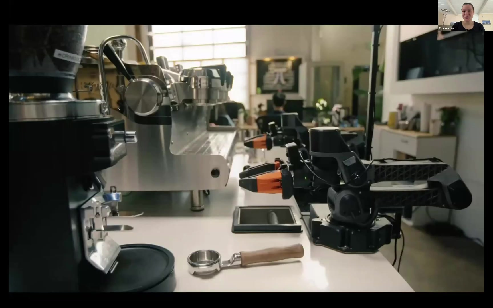
에스프레소 제조는 작은 실패가 전체 에피소드를 망치는 장기 과제다. 포터필터를 그룹헤드에 정밀하게 끼우고, 충분한 힘으로 돌려 잠그고, 액체가 든 잔을 부드럽게 옮기며, 추출이 끝날 때까지 기다려야 한다. 각각은 개별적으로도 까다롭지만 실제 어려움은 이 조건이 하나의 긴 워크플로에서 연속해 나타난다는 데 있다.
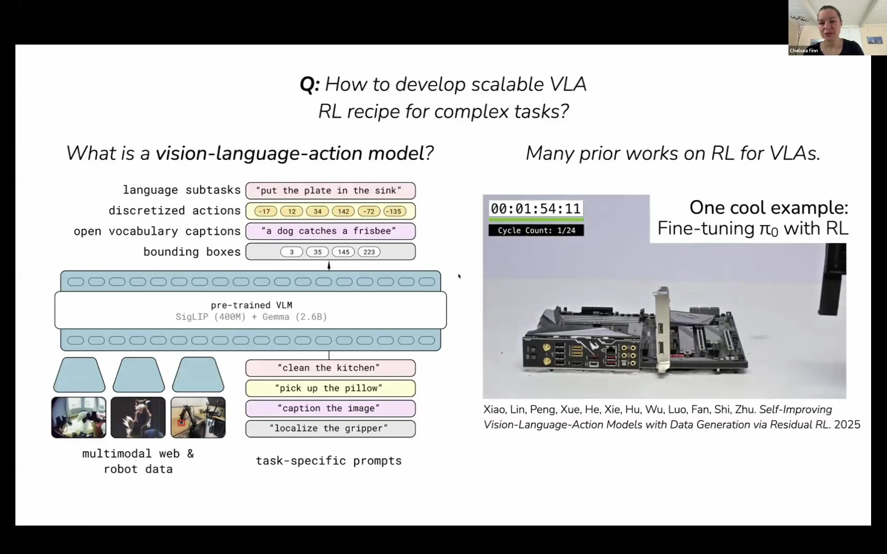
VLA는 대체로 사전학습된 비전-언어 모델과 행동 생성을 담당하는 action expert를 결합한다. GPU 삽입처럼 짧고 정밀한 과제에서는 RL 후속 학습이 성과를 냈지만, 에스프레소처럼 길고 복합적인 작업에서 높은 신뢰성을 얻는 방법은 여전히 불분명했다.
진행도를 배우고, 전진하는 행동을 고른다
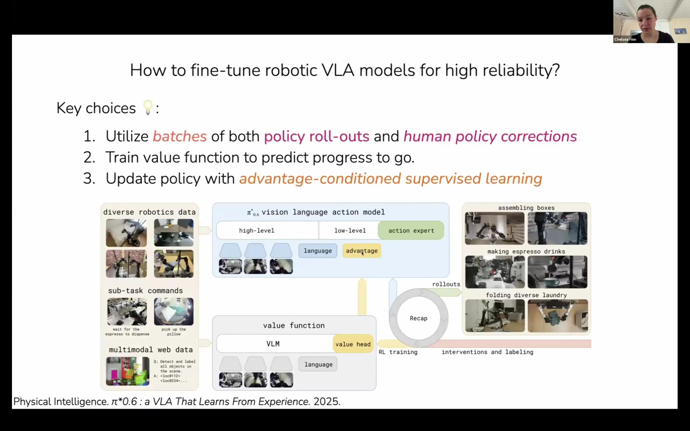
Learning loop
첫 번째 선택은 정책이 처음 보는 실패 상태에서 회복 방법을 우연히 발견하기를 기다리지 않는 것이다. 사람이 적절한 순간에 개입해 올바른 회복 행동을 보여주고, 그 교정 데이터를 정책 롤아웃과 같은 배치에 포함한다. 원본 데모가 정상 경로를 담당한다면 교정 데이터는 정상 경로 바깥의 복구 가능 영역을 메운다.
보상이 아니라 ‘남은 시간’을 예측한다
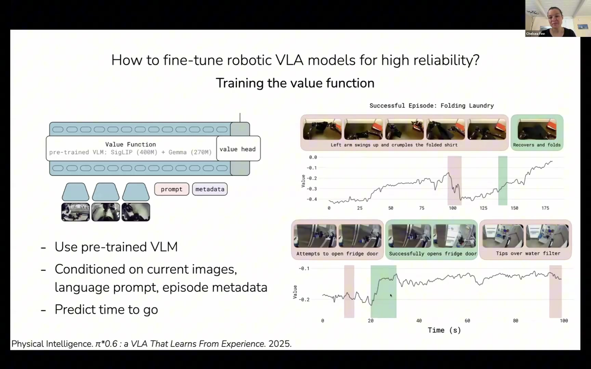
가치함수는 사전학습 VLM에 value head를 더한 구조다. 현재 이미지, 언어 프롬프트, 에피소드 메타데이터를 입력으로 받아 성공까지 남은 시간, 즉 progress to go를 예측한다. 몬테카를로 방식의 단순한 지도학습 목적함수를 사용하므로 대형 모델과 대규모 데이터에 비교적 쉽게 확장할 수 있다.
중요한 점은 이 값이 단순한 타이머가 아니라 행동의 의미를 반영한다는 것이다. 이미 접은 옷을 다시 펼치면 음의 진행으로 평가되고, 냉장고 문을 열다가 물체를 쓰러뜨려 작업 상태를 악화시키면 가치가 하락한다. 과제를 다시 회복하면 값도 상승한다. ‘전진’과 ‘후퇴’라는 개념이 시간 예측에서 자연스럽게 나타난 셈이다.
Advantage를 이진 조건으로 바꾸는 이유
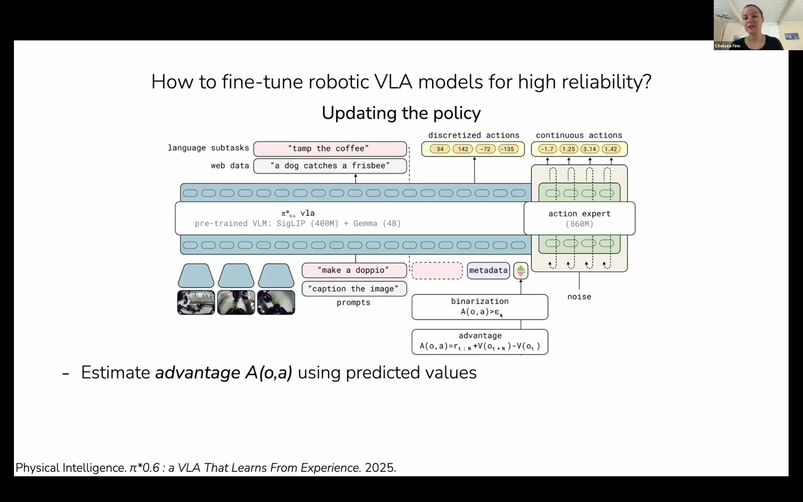
행동 전후의 가치 차이가 임계값을 넘으면 양의 advantage, 그렇지 않으면 음의 advantage로 표시한다. 정책은 이 레이블을 조건으로 받아 지도학습되고, 추론 시에는 양의 advantage에 고정해 ‘앞으로 나아가는 행동’을 생성한다. 발표 Q&A에 따르면 연속값 조건화는 아직 시도하지 않았다. 이진화는 표현력이 제한적인 대신 테스트 시 어떤 조건값을 넣을지 명확하다는 실용적 장점이 있다.
성공률을 넘어 처리량으로
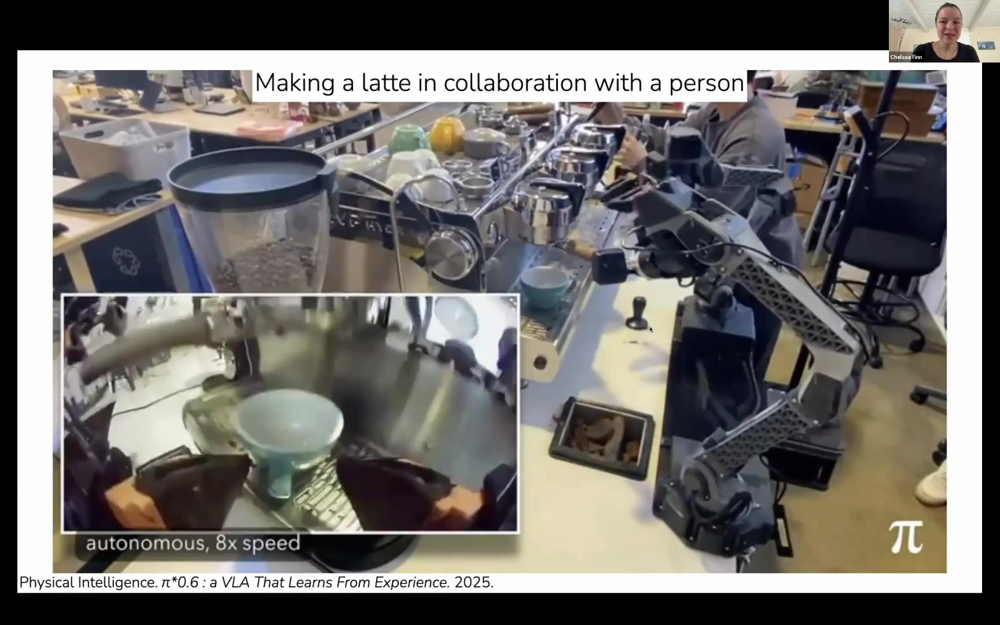
완성된 정책은 포터필터를 그라인더 아래에 놓고, 탬핑하고, 머신에 삽입하고, 추출을 기다린 뒤 잔을 옮긴다. Finn이 가장 어려운 구간으로 꼽은 것은 의외로 마지막 잔 이동이다. 액체가 담긴 잔은 작은 흔들림만으로도 결과 전체를 망칠 수 있다.
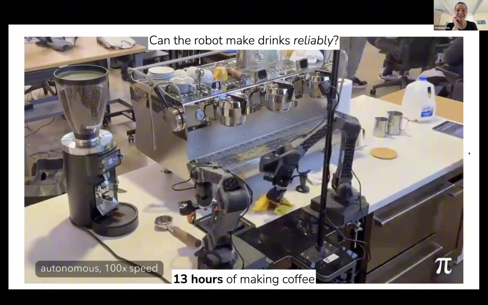
연구팀은 RL 후속 학습을 마친 정책으로 13시간 연속 커피 제조를 수행했다. 짧은 성공 영상보다 의미 있는 증거다. 장시간 운전에서는 희귀한 실패 상태, 누적 오차, 반복적인 물체 배치 변화가 자연스럽게 드러나기 때문이다.
연구실을 벗어난 워크플로
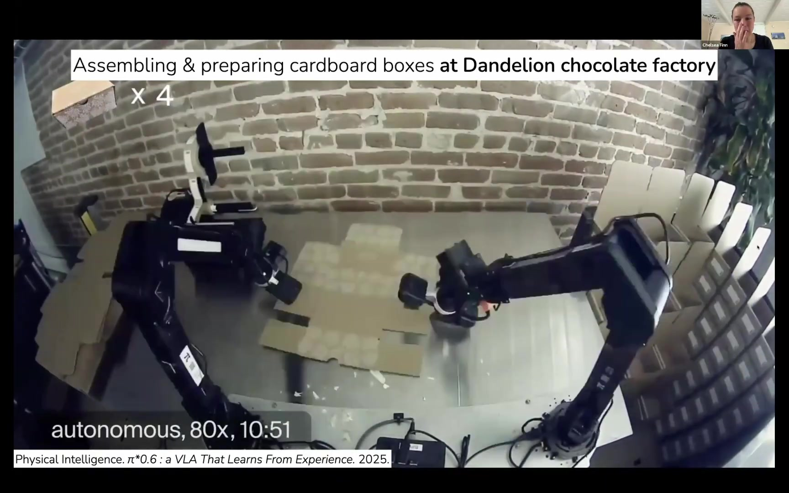
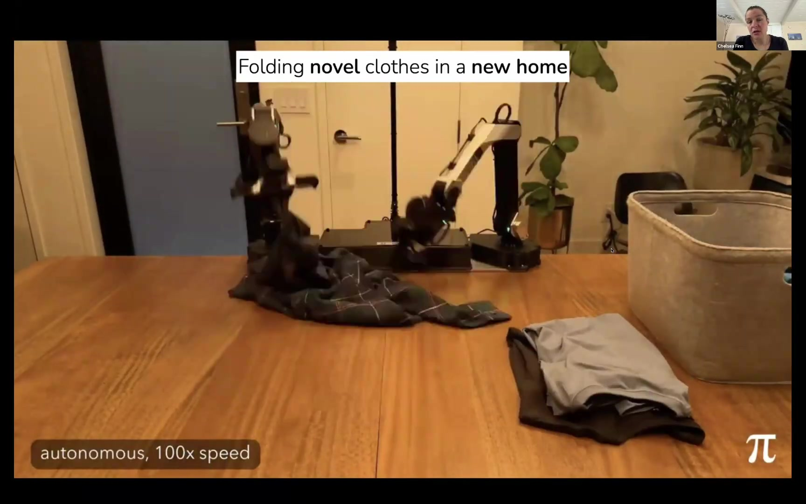
평가 대상에는 연구용으로 설계된 과제만 있지 않다. Physical Intelligence 사무실 근처 Dandelion 초콜릿 공장에서 사람이 실제로 반복하는 골판지 상자 조립, 라벨링, 적재 작업을 재현했다. 또한 로봇이 학습 중 보지 못한 옷을 처음 방문한 집에서 접게 해 환경과 물체 변화에 대한 일반화도 확인했다.
왜 throughput인가
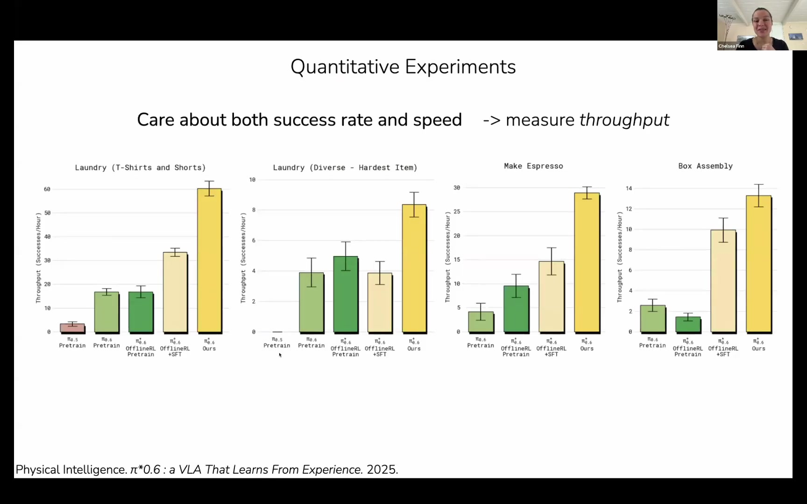
성공률만으로는 ‘천천히 성공하는 정책’과 ‘빠르게 성공하는 정책’을 구분하기 어렵다. 더 나쁜 경우, 실패가 확정된 뒤에도 오랫동안 동작하는 정책이 성공률상으로는 빠르게 실패하는 정책과 동일하게 기록된다. 연구팀은 이를 보완하기 위해 단위 시간당 성공 횟수를 측정했다.
에스프레소 제조 성공률은 약 40%에서 90% 이상으로 상승했다.
같은 설정에서 AWR과 PPO는 지도 미세조정(SFT) 대비 뚜렷한 개선을 보이지 못했다. 반면 advantage 조건부 지도학습만이 높은 성공률과 훨씬 높은 throughput을 함께 달성했다. 표준 RL 알고리즘을 대형 VLA에 그대로 적용하는 것보다 모델의 기존 학습 특성에 맞춘 인터페이스가 중요하다는 실증이다.
| 평가 관점 | 성공률 | Throughput | 운영 의미 |
|---|---|---|---|
| 무엇을 세는가 | 성공한 에피소드 비율 | 단위 시간당 성공 횟수 | 품질과 속도의 결합 여부 |
| 느린 성공 | 높게 평가 가능 | 속도 비용 반영 | 실제 생산성 차이를 드러냄 |
| 오래 끄는 실패 | 시간 손실을 반영하지 않음 | 큰 불이익 | 복구·중단 전략 평가에 유리 |
| 현장 KPI 연결 | 간접적 | 직접적 | 시간당 처리량과 대응 |
Diffusion 정책은 보존하고, 작은 정책이 수정한다
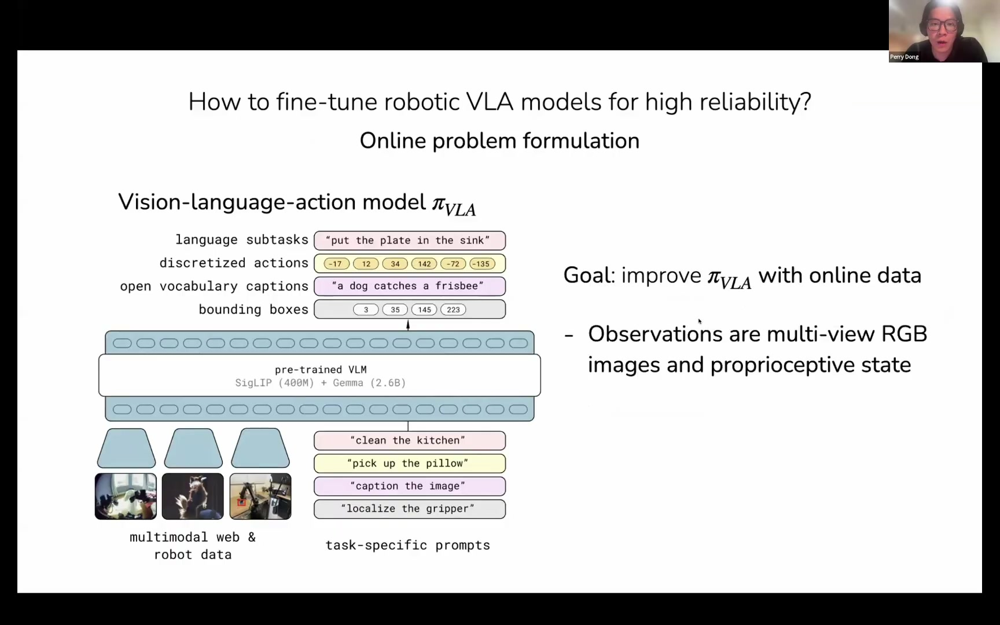
Perry Dong이 맡은 2부는 데이터 효율적인 온라인 미세조정에 집중한다. 시작점은 이미 학습된 πVLA이며, 손목·측면 카메라의 다중 시점 RGB와 로봇의 고유수용성 상태를 관측한다. 과제에 따라 정책 갱신은 스텝, 에피소드 또는 배치 단위로 수행할 수 있다.
표현력이 높을수록 RL은 어려워진다
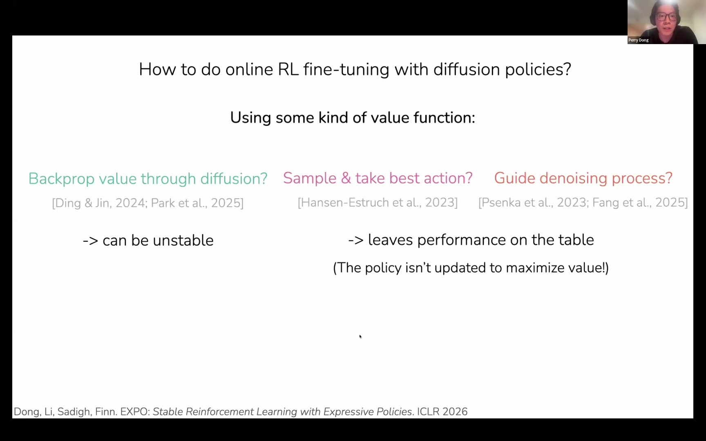
현대 VLA는 diffusion이나 flow matching처럼 다봉형 행동 분포를 표현할 수 있는 정책을 사용한다. 반면 전통적인 심층 RL은 단순한 가우시안 정책을 전제로 발전했다. 가치를 diffusion 네트워크에 직접 역전파하면 긴 denoising 체인 때문에 학습이 불안정해질 수 있다. 여러 행동을 뽑아 Q가 가장 높은 행동을 선택하거나 denoising 과정에 가치 지도를 넣는 방식은 추론을 개선하지만 정책 자체가 가치를 최대화하도록 충분히 갱신되지 않는다는 문제가 있다.
EXPO의 첫 번째 아이디어: edit policy
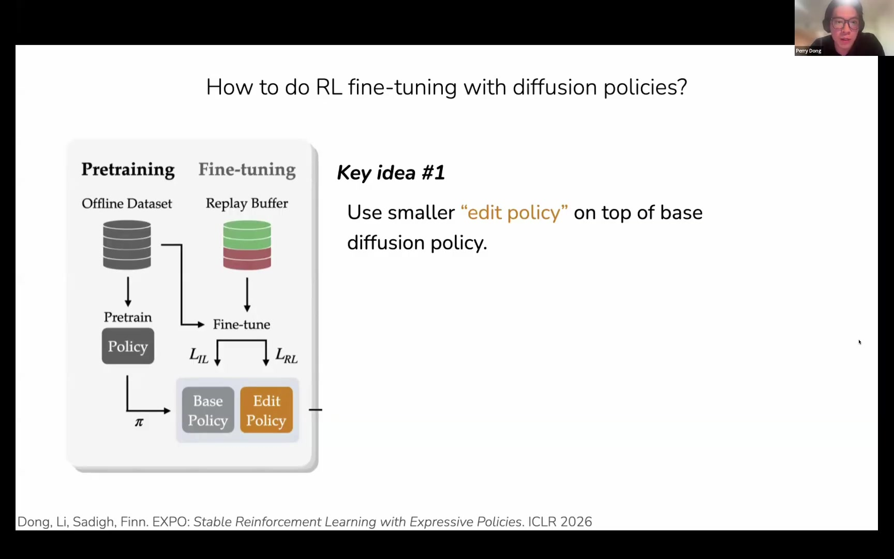
Two-policy architecture
EXPO는 base diffusion 정책을 직접 가치 최대화로 밀어붙이지 않는다. 대신 그 위에 작은 가우시안 edit policy를 두어 행동을 수정한다. base는 오프라인과 온라인 데이터에 대한 지도학습으로 안정적으로 유지되고, edit policy에는 검증된 off-policy 목적함수를 적용할 수 있다.
두 번째 아이디어: 최신 Q로 즉석 후보 선택
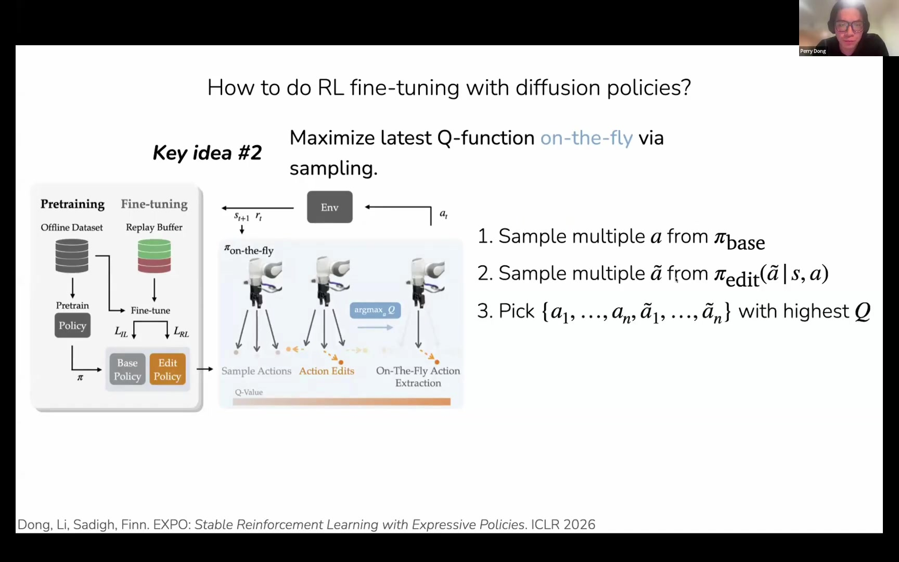
실행 시 base 정책에서 여러 행동을 샘플링하고, 각 행동마다 edit 후보를 다시 만든다. 시스템은 원본과 수정본을 합친 집합에서 Q가 가장 높은 행동을 고른다. 이 절차는 Bellman backup에서 다음 행동을 선택할 때도 동일하게 사용된다.
이 구조는 두 가지 실패를 완화한다. edit policy가 최신 Q 함수보다 늦게 따라가더라도 행동 선택은 항상 현재 Q에 근거한다. edit policy가 붕괴하더라도 원본 base 행동이 후보 집합에 남아 있으므로 시스템이 완전히 무너지지 않는다.
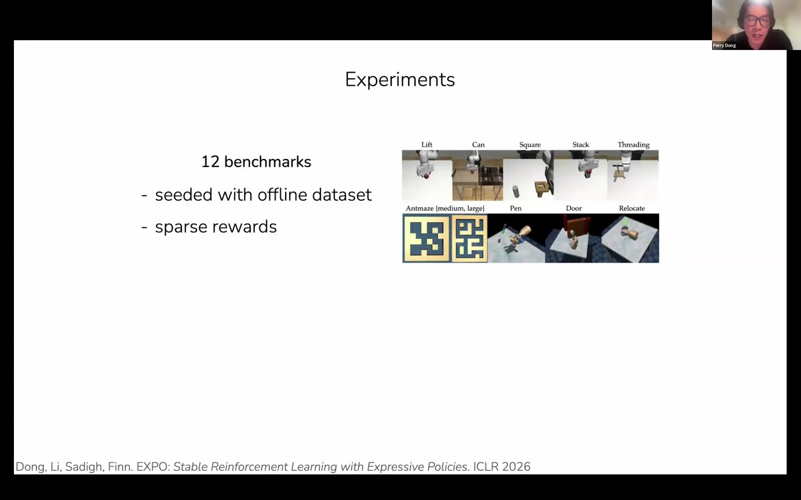
조작, 내비게이션, 손재주를 포괄하는 12개 벤치마크에서 EXPO는 sparse reward와 오프라인 데이터셋을 시드로 사용해 높은 성능을 보였다. 단, relocate binary처럼 오프라인 데이터 분포를 크게 벗어나는 탐색이 필요한 과제에서는 저조했다. 실세계에서는 무작정 탐색시키기보다 필요한 데모를 몇 개 추가하는 편이 현실적이라는 것이 발표자의 설명이다.
EXPO-FT: 사람의 개입까지 학습 데이터로
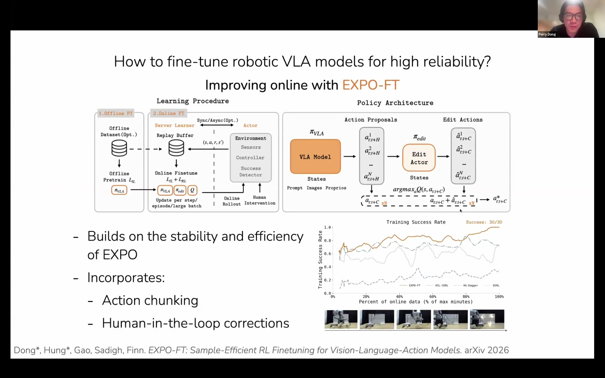
EXPO-FT는 EXPO에 action chunking과 human-in-the-loop 보정을 더한다. 사람이 온라인 정제 과정을 지켜보다가 위험하거나 실패 가능성이 높은 순간 원격조작으로 개입한다. 정책이 원래 예측했던 행동과 사람이 대체한 행동은 모두 리플레이 버퍼에 저장된다. 보상은 과제별로 설계한 연속 함수 대신 규칙 기반 분류기의 sparse binary 신호를 사용한다.
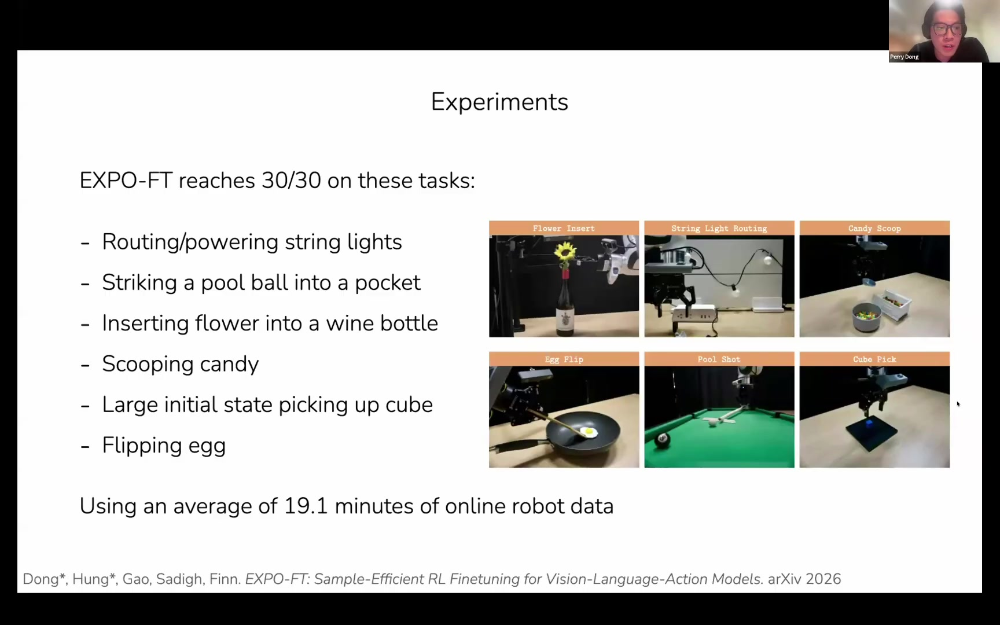
전구 배선, 당구공 넣기, 꽃 꽂기, 사탕 퍼담기, 넓은 초기 상태에서 큐브 집기, 계란 뒤집기에서 보고된 결과다.
과제군은 정밀 조작, 동적 움직임, 넓은 초기 상태 분포를 포함한다. Hindsight Experience Replay 같은 강력한 실세계 기법도 초기 상태 분포를 크게 넓히면 일관된 성능을 보이지 못했다는 비교가 함께 제시됐다. EXPO-FT의 차별점은 강력한 사전학습 정책, 잔차 수정, Q 기반 후보 선택, 사람 개입을 하나의 안정적인 데이터 루프로 묶었다는 데 있다.
여전히 사람과 계산 자원이 필요하다
완전 자율 학습이 아니다. 사람의 원격조작 개입과 과제별 환경 리셋이 계속 필요하며, EXPO-FT 실험에서도 사람이 리셋을 수행했다.
반복 횟수가 제한적이다. 발표의 후속 학습 루프는 몇 차례 반복됐으며, 장기적인 반복에서 성능이 계속 개선되는지는 추가 검증이 필요하다.
로봇은 여전히 느리고 실수한다. 높은 성공률은 인간 수준의 속도나 숙련도를 의미하지 않는다.
분포 밖 탐색에 약하다. EXPO는 오프라인 데이터가 거의 다루지 않은 상태를 새로 탐색해야 할 때 성능이 낮아진다.
추론 비용이 크다. 여러 base 행동과 edit 행동을 생성하고 Q로 평가하는 과정은 제어 지연과 계산 비용을 늘린다.
RL판 test-time scaling의 비용
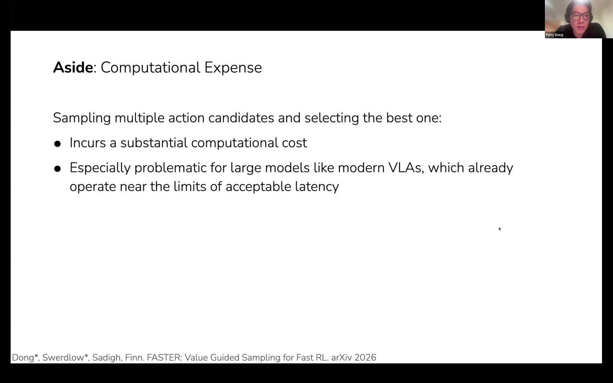
여러 행동 후보를 생성한 뒤 가장 가치가 높은 것을 고르는 절차는 일종의 RL판 test-time scaling이다. 성능은 좋아질 수 있지만 후보 수에 비례해 계산량이 늘어난다. 이미 허용 가능한 지연 한계 근처에서 작동하는 대형 VLA에는 특히 부담스럽다.
후속 연구인 FASTER는 denoising이 완료되기 전에 가치가 낮은 후보를 걸러낸다. 어느 시점에 어떤 후보를 제거할지를 별도의 MDP로 정의하고 적응적 필터링 정책을 학습한다. 이는 EXPO뿐 아니라 ‘여러 행동을 샘플링한 뒤 최선을 고르는’ 다른 diffusion Q-learning 계열에도 적용 가능한 방향이다.
다음 연구 질문
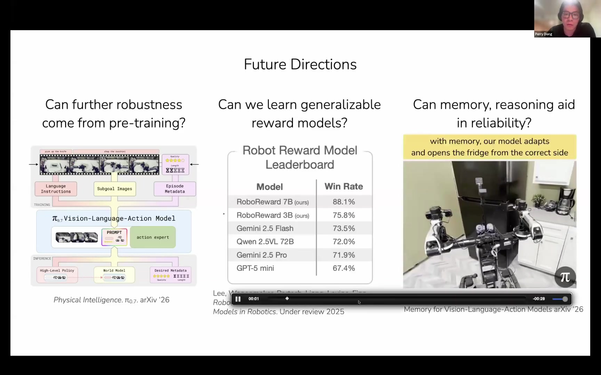
발표는 세 가지 방향으로 끝난다. 첫째, π₀.₇ 같은 더 강한 사전학습이 후속 학습 이전의 강건성을 어디까지 높일 수 있는가. 둘째, 과제마다 규칙 기반 성공 분류기를 만드는 대신 다양한 작업에서 재사용할 수 있는 범용 로봇 보상 모델을 학습할 수 있는가. 셋째, 장기 메모리와 추론이 신뢰성 및 in-context 적응에 얼마나 기여할 수 있는가다.
현장 자동화가 가져갈 네 가지 아이디어
① 진행도는 이식 가능한 가치 신호다
성공까지 남은 시간은 복잡한 과제별 보상보다 정의하기 쉽다. 공정 단계가 분명한 굴착, 상하차, 조립 작업에서는 전진과 후퇴를 나타내는 실용적 감독 신호가 될 수 있다.
② 개입은 비용이 아니라 데이터다
숙련 오퍼레이터가 자동 운전 중 수행한 수정 행동을 저장하면 별도의 데모 세션 없이 회복 행동 데이터가 쌓인다. 안전 개입과 학습 데이터 수집을 같은 인터페이스로 묶을 수 있다.
③ 지표를 생산 KPI에 맞춰야 한다
시간당 성공 횟수는 생산 라인의 처리량과 직접 연결된다. 성공률뿐 아니라 실패 후 중단 시간, 복구 시간, 정상 사이클 시간을 함께 최적화하게 만든다.
④ 엣지 추론 비용이 병목이 된다
후보 샘플링은 지연에 민감한 제어 루프와 충돌한다. 중장비나 이동 로봇에서는 FASTER 같은 조기 후보 제거와 안전한 fallback 정책이 핵심 시스템 요건이 될 수 있다.
독자를 위한 최종 정리
- 대형 VLA의 신뢰성을 높이는 데 반드시 정책 전체를 RL로 직접 갱신할 필요는 없다.
- 진행도 기반 가치함수는 실패 상태에서 무엇이 전진이고 후퇴인지 구분하는 간결한 방법이다.
- 사람의 교정은 자율성의 반대가 아니라, 더 나은 자율성을 만드는 고가치 데이터가 될 수 있다.
- 실험 성과를 판단할 때 성공률과 함께 throughput, 개입량, 리셋 비용, 추론 지연을 봐야 한다.
- 현재 결과는 ‘무인 학습의 완성’보다 ‘현실적인 사람-로봇 공동 개선 루프’에 가깝다.
출처와 참조 문헌
- Chelsea Finn & Perry Dong. Reliable VLA Post-Training with Real-World RL. ICRA 2026 RL4IL Workshop 발표 영상, Zhanpeng He 채널, 2026.
- Physical Intelligence. π*0.6: a VLA That Learns From Experience. 2025.
- Dong, Li, Sadigh, Finn. EXPO: Stable Reinforcement Learning with Expressive Policies. ICLR 2026.
- Dong*, Hung*, Gao, Sadigh, Finn. EXPO-FT: Sample-Efficient RL Finetuning for Vision-Language-Action Models. arXiv, 2026.
- Dong*, Swerdlow*, Sadigh, Finn. FASTER: Value Guided Sampling for Fast RL. arXiv, 2026.
- Xiao et al. Self-Improving Vision-Language-Action Models with Data Generation via Residual RL. 2025.
본 글은 발표 영상과 제공된 발표 노트를 바탕으로 재구성한 연구 해설이다. 성공률, 처리량, 온라인 데이터 시간과 비교 결과는 발표자가 보고한 수치이며, 독립적인 재현 결과를 의미하지 않는다. 논문별 실험 조건, 오차 범위, 베이스라인 설정은 원문에서 추가 확인할 필요가 있다.